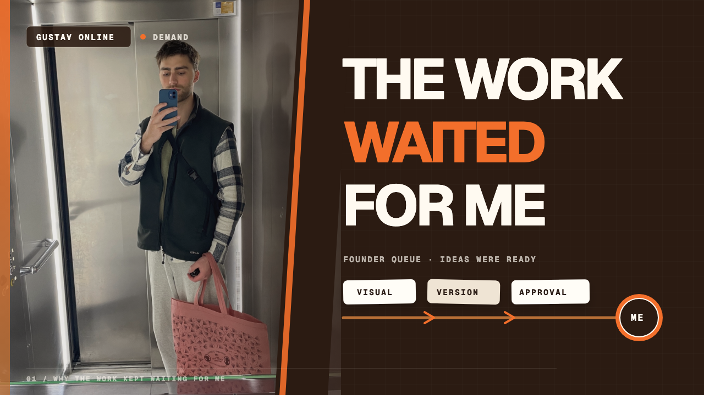
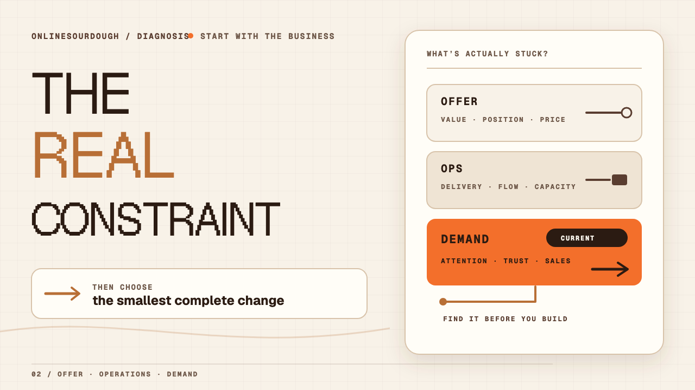

Gustav Online / onlinesourdough
Two ways to see the constraint.
One portrait-led founder queue. One diagram-led diagnosis board. Shared visual family; distinct stories. Future content planning only.

The bottleneck is personal and visible. The image does not claim it has been removed.

Offer, Ops, and Demand stay distinct. Demand is only the current worked example.
YouTube card check · 320 × 180
Readable before the click.
At card scale, the headline reads first, then either the person or the three-lane method. Fine evidence labels may recede without carrying unique meaning.